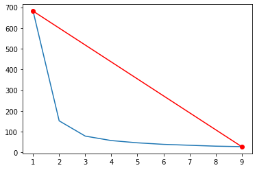

Tugas 5#
from google.colab import drive
drive.mount('/content/drive')
KeyboardInterruptTraceback (most recent call last)
<ipython-input-1-d5df0069828e> in <cell line: 2>()
1 from google.colab import drive
----> 2 drive.mount('/content/drive')
/usr/local/lib/python3.9/dist-packages/google/colab/drive.py in mount(mountpoint, force_remount, timeout_ms, readonly)
101 def mount(mountpoint, force_remount=False, timeout_ms=120000, readonly=False):
102 """Mount your Google Drive at the specified mountpoint path."""
--> 103 return _mount(
104 mountpoint,
105 force_remount=force_remount,
/usr/local/lib/python3.9/dist-packages/google/colab/drive.py in _mount(mountpoint, force_remount, timeout_ms, ephemeral, readonly)
130 )
131 if ephemeral:
--> 132 _message.blocking_request(
133 'request_auth', request={'authType': 'dfs_ephemeral'}, timeout_sec=None
134 )
/usr/local/lib/python3.9/dist-packages/google/colab/_message.py in blocking_request(request_type, request, timeout_sec, parent)
175 request_type, request, parent=parent, expect_reply=True
176 )
--> 177 return read_reply_from_input(request_id, timeout_sec)
/usr/local/lib/python3.9/dist-packages/google/colab/_message.py in read_reply_from_input(message_id, timeout_sec)
95 reply = _read_next_input_message()
96 if reply == _NOT_READY or not isinstance(reply, dict):
---> 97 time.sleep(0.025)
98 continue
99 if (
KeyboardInterrupt:
import pandas as pd
import numpy as np
from sklearn import datasets
from sklearn.cluster import KMeans
import matplotlib.pyplot as plt
import matplotlib.patches as mpatches
import sklearn.metrics as sm
%matplotlib inline
iris = datasets.load_iris()
print(iris.data)
[[5.1 3.5 1.4 0.2]
[4.9 3. 1.4 0.2]
[4.7 3.2 1.3 0.2]
[4.6 3.1 1.5 0.2]
[5. 3.6 1.4 0.2]
[5.4 3.9 1.7 0.4]
[4.6 3.4 1.4 0.3]
[5. 3.4 1.5 0.2]
[4.4 2.9 1.4 0.2]
[4.9 3.1 1.5 0.1]
[5.4 3.7 1.5 0.2]
[4.8 3.4 1.6 0.2]
[4.8 3. 1.4 0.1]
[4.3 3. 1.1 0.1]
[5.8 4. 1.2 0.2]
[5.7 4.4 1.5 0.4]
[5.4 3.9 1.3 0.4]
[5.1 3.5 1.4 0.3]
[5.7 3.8 1.7 0.3]
[5.1 3.8 1.5 0.3]
[5.4 3.4 1.7 0.2]
[5.1 3.7 1.5 0.4]
[4.6 3.6 1. 0.2]
[5.1 3.3 1.7 0.5]
[4.8 3.4 1.9 0.2]
[5. 3. 1.6 0.2]
[5. 3.4 1.6 0.4]
[5.2 3.5 1.5 0.2]
[5.2 3.4 1.4 0.2]
[4.7 3.2 1.6 0.2]
[4.8 3.1 1.6 0.2]
[5.4 3.4 1.5 0.4]
[5.2 4.1 1.5 0.1]
[5.5 4.2 1.4 0.2]
[4.9 3.1 1.5 0.2]
[5. 3.2 1.2 0.2]
[5.5 3.5 1.3 0.2]
[4.9 3.6 1.4 0.1]
[4.4 3. 1.3 0.2]
[5.1 3.4 1.5 0.2]
[5. 3.5 1.3 0.3]
[4.5 2.3 1.3 0.3]
[4.4 3.2 1.3 0.2]
[5. 3.5 1.6 0.6]
[5.1 3.8 1.9 0.4]
[4.8 3. 1.4 0.3]
[5.1 3.8 1.6 0.2]
[4.6 3.2 1.4 0.2]
[5.3 3.7 1.5 0.2]
[5. 3.3 1.4 0.2]
[7. 3.2 4.7 1.4]
[6.4 3.2 4.5 1.5]
[6.9 3.1 4.9 1.5]
[5.5 2.3 4. 1.3]
[6.5 2.8 4.6 1.5]
[5.7 2.8 4.5 1.3]
[6.3 3.3 4.7 1.6]
[4.9 2.4 3.3 1. ]
[6.6 2.9 4.6 1.3]
[5.2 2.7 3.9 1.4]
[5. 2. 3.5 1. ]
[5.9 3. 4.2 1.5]
[6. 2.2 4. 1. ]
[6.1 2.9 4.7 1.4]
[5.6 2.9 3.6 1.3]
[6.7 3.1 4.4 1.4]
[5.6 3. 4.5 1.5]
[5.8 2.7 4.1 1. ]
[6.2 2.2 4.5 1.5]
[5.6 2.5 3.9 1.1]
[5.9 3.2 4.8 1.8]
[6.1 2.8 4. 1.3]
[6.3 2.5 4.9 1.5]
[6.1 2.8 4.7 1.2]
[6.4 2.9 4.3 1.3]
[6.6 3. 4.4 1.4]
[6.8 2.8 4.8 1.4]
[6.7 3. 5. 1.7]
[6. 2.9 4.5 1.5]
[5.7 2.6 3.5 1. ]
[5.5 2.4 3.8 1.1]
[5.5 2.4 3.7 1. ]
[5.8 2.7 3.9 1.2]
[6. 2.7 5.1 1.6]
[5.4 3. 4.5 1.5]
[6. 3.4 4.5 1.6]
[6.7 3.1 4.7 1.5]
[6.3 2.3 4.4 1.3]
[5.6 3. 4.1 1.3]
[5.5 2.5 4. 1.3]
[5.5 2.6 4.4 1.2]
[6.1 3. 4.6 1.4]
[5.8 2.6 4. 1.2]
[5. 2.3 3.3 1. ]
[5.6 2.7 4.2 1.3]
[5.7 3. 4.2 1.2]
[5.7 2.9 4.2 1.3]
[6.2 2.9 4.3 1.3]
[5.1 2.5 3. 1.1]
[5.7 2.8 4.1 1.3]
[6.3 3.3 6. 2.5]
[5.8 2.7 5.1 1.9]
[7.1 3. 5.9 2.1]
[6.3 2.9 5.6 1.8]
[6.5 3. 5.8 2.2]
[7.6 3. 6.6 2.1]
[4.9 2.5 4.5 1.7]
[7.3 2.9 6.3 1.8]
[6.7 2.5 5.8 1.8]
[7.2 3.6 6.1 2.5]
[6.5 3.2 5.1 2. ]
[6.4 2.7 5.3 1.9]
[6.8 3. 5.5 2.1]
[5.7 2.5 5. 2. ]
[5.8 2.8 5.1 2.4]
[6.4 3.2 5.3 2.3]
[6.5 3. 5.5 1.8]
[7.7 3.8 6.7 2.2]
[7.7 2.6 6.9 2.3]
[6. 2.2 5. 1.5]
[6.9 3.2 5.7 2.3]
[5.6 2.8 4.9 2. ]
[7.7 2.8 6.7 2. ]
[6.3 2.7 4.9 1.8]
[6.7 3.3 5.7 2.1]
[7.2 3.2 6. 1.8]
[6.2 2.8 4.8 1.8]
[6.1 3. 4.9 1.8]
[6.4 2.8 5.6 2.1]
[7.2 3. 5.8 1.6]
[7.4 2.8 6.1 1.9]
[7.9 3.8 6.4 2. ]
[6.4 2.8 5.6 2.2]
[6.3 2.8 5.1 1.5]
[6.1 2.6 5.6 1.4]
[7.7 3. 6.1 2.3]
[6.3 3.4 5.6 2.4]
[6.4 3.1 5.5 1.8]
[6. 3. 4.8 1.8]
[6.9 3.1 5.4 2.1]
[6.7 3.1 5.6 2.4]
[6.9 3.1 5.1 2.3]
[5.8 2.7 5.1 1.9]
[6.8 3.2 5.9 2.3]
[6.7 3.3 5.7 2.5]
[6.7 3. 5.2 2.3]
[6.3 2.5 5. 1.9]
[6.5 3. 5.2 2. ]
[6.2 3.4 5.4 2.3]
[5.9 3. 5.1 1.8]]
print(iris.target_names)
['setosa' 'versicolor' 'virginica']
print(iris.target)
[0 0 0 0 0 0 0 0 0 0 0 0 0 0 0 0 0 0 0 0 0 0 0 0 0 0 0 0 0 0 0 0 0 0 0 0 0
0 0 0 0 0 0 0 0 0 0 0 0 0 1 1 1 1 1 1 1 1 1 1 1 1 1 1 1 1 1 1 1 1 1 1 1 1
1 1 1 1 1 1 1 1 1 1 1 1 1 1 1 1 1 1 1 1 1 1 1 1 1 1 2 2 2 2 2 2 2 2 2 2 2
2 2 2 2 2 2 2 2 2 2 2 2 2 2 2 2 2 2 2 2 2 2 2 2 2 2 2 2 2 2 2 2 2 2 2 2 2
2 2]
x = pd.DataFrame(iris.data, columns=['Sepal Length', 'Sepal Width', 'Petal Length', 'Petal Width'])
y = pd.DataFrame(iris.target, columns=['Target'])
x.head()
| Sepal Length | Sepal Width | Petal Length | Petal Width | |
|---|---|---|---|---|
| 0 | 5.1 | 3.5 | 1.4 | 0.2 |
| 1 | 4.9 | 3.0 | 1.4 | 0.2 |
| 2 | 4.7 | 3.2 | 1.3 | 0.2 |
| 3 | 4.6 | 3.1 | 1.5 | 0.2 |
| 4 | 5.0 | 3.6 | 1.4 | 0.2 |
y.head()
| Target | |
|---|---|
| 0 | 0 |
| 1 | 0 |
| 2 | 0 |
| 3 | 0 |
| 4 | 0 |
plt.figure(figsize=(12,3))
colors = np.array(['red', 'green', 'blue'])
iris_targets_legend = np.array(iris.target_names)
red_patch = mpatches.Patch(color='red', label='Setosa')
green_patch = mpatches.Patch(color='green', label='Versicolor')
blue_patch = mpatches.Patch(color='blue', label='Virginica')
plt.subplot(1, 2, 1)
plt.scatter(x['Sepal Length'], x['Sepal Width'], c=colors[y['Target']])
plt.title('Sepal Length vs Sepal Width')
plt.legend(handles=[red_patch, green_patch, blue_patch])
plt.subplot(1,2,2)
plt.scatter(x['Petal Length'], x['Petal Width'], c= colors[y['Target']])
plt.title('Petal Length vs Petal Width')
plt.legend(handles=[red_patch, green_patch, blue_patch])
<matplotlib.legend.Legend at 0x7f0ae987ffd0>
iris_k_mean_model = KMeans(n_clusters=3)
iris_k_mean_model.fit(x)
KMeans(n_clusters=3)
print(iris_k_mean_model.labels_)
[1 1 1 1 1 1 1 1 1 1 1 1 1 1 1 1 1 1 1 1 1 1 1 1 1 1 1 1 1 1 1 1 1 1 1 1 1
1 1 1 1 1 1 1 1 1 1 1 1 1 0 0 2 0 0 0 0 0 0 0 0 0 0 0 0 0 0 0 0 0 0 0 0 0
0 0 0 2 0 0 0 0 0 0 0 0 0 0 0 0 0 0 0 0 0 0 0 0 0 0 2 0 2 2 2 2 0 2 2 2 2
2 2 0 0 2 2 2 2 0 2 0 2 0 2 2 0 0 2 2 2 2 2 0 2 2 2 2 0 2 2 2 0 2 2 2 0 2
2 0]
print(iris_k_mean_model.cluster_centers_)
[[5.9016129 2.7483871 4.39354839 1.43387097]
[5.006 3.428 1.462 0.246 ]
[6.85 3.07368421 5.74210526 2.07105263]]
plt.figure(figsize=(12,3))
colors = np.array(['red', 'green', 'blue'])
predictedY = np.choose(iris_k_mean_model.labels_, [1, 0, 2]).astype(np.int64)
plt.subplot(1, 2, 1)
plt.scatter(x['Petal Length'], x['Petal Width'], c=colors[y['Target']])
plt.title('Before classification')
plt.legend(handles=[red_patch, green_patch, blue_patch])
plt.subplot(1, 2, 2)
plt.scatter(x['Petal Length'], x['Petal Width'], c=colors[predictedY])
plt.title("Model's classification")
plt.legend(handles=[red_patch, green_patch, blue_patch])
<matplotlib.legend.Legend at 0x7f0ae99b95d0>

predictedY = np.choose(iris_k_mean_model.labels_, [0, 1, 2]).astype(np.int64)
sm.accuracy_score(predictedY, y['Target'])
0.24
sm.confusion_matrix(predictedY, y['Target'])
array([[ 0, 48, 14],
[50, 0, 0],
[ 0, 2, 36]])
x.shape
(150, 4)
dist_points_from_cluster_center = []
K = range(1,10)
for no_of_clusters in K:
k_model = KMeans(n_clusters=no_of_clusters)
k_model.fit(x)
dist_points_from_cluster_center.append(k_model.inertia_)
dist_points_from_cluster_center
[681.3706,
152.3479517603579,
78.851441426146,
57.25600931571816,
46.446182051282065,
39.03998724608726,
34.6308463426838,
30.2351189202954,
27.983390977443612]
plt.plot(K, dist_points_from_cluster_center)
[<matplotlib.lines.Line2D at 0x7f0ae9b27890>]
plt.plot(K, dist_points_from_cluster_center)
plt.plot([K[0], K[8]], [dist_points_from_cluster_center[0],
dist_points_from_cluster_center[8]], 'ro-')
plt.show()

x = [K[0], K[8]]
y = [dist_points_from_cluster_center[0], dist_points_from_cluster_center[8]]
# Calculate the coefficients. This line answers the initial question.
coefficients = np.polyfit(x, y, 1)
# Print the findings
print ('a =', coefficients[0])
print ('b =', coefficients[1])
# Let's compute the values of the line...
polynomial = np.poly1d(coefficients)
x_axis = np.linspace(0,9,100)
y_axis = polynomial(x_axis)
# ...and plot the points and the line
plt.plot(x_axis, y_axis)
plt.grid('on')
plt.show()
a = -81.67340112781956
b = 763.0440011278193
def calc_distance(x1, y1, a, b, c):
d = abs((a * x1 + b * y1 + c)) / (math.sqrt(a * a + b * b))
return d
a = dist_points_from_cluster_center[0] - dist_points_from_cluster_center[8]
b = K[8] - K[0]
c1 = K[0] * dist_points_from_cluster_center[8]
c2 = K[8] * dist_points_from_cluster_center[0]
c = c1 - c2
dist_points_from_cluster_center
[681.3706,
152.3479517603579,
78.851441426146,
57.25600931571816,
46.446182051282065,
39.03998724608726,
34.6308463426838,
30.2351189202954,
27.983390977443612]
distance_of_points_from_line = []
for k in range(9):
distance_of_points_from_line.append(
calc_distance(K[k], dist_points_from_cluster_center[k], a, b, c))
distance_of_points_from_line
[1.3918646163099296e-15,
5.476883697939681,
5.37677426403211,
4.641241453278482,
3.773660799067402,
2.8644095725905836,
1.9184655031894873,
0.9723572129341531,
1.3918646163099296e-15]
plt.plot(K, distance_of_points_from_line)
[<matplotlib.lines.Line2D at 0x7f0ae9919b90>]
plt.figure(figsize=(12,3))
colors = np.array(['red', 'green', 'blue'])
iris_targets_legend = np.array(iris.target_names)
red_patch = mpatches.Patch(color='red', label='Setosa')
green_patch = mpatches.Patch(color='green', label='Versicolor')
blue_patch = mpatches.Patch(color='blue', label='Virginica')
plt.subplot(1, 2, 1)
plt.scatter(x['Sepal Length'], x['Sepal Width'], c=colors[y['Target']])
plt.title('Sepal Length vs Sepal Width')
plt.legend(handles=[red_patch, green_patch, blue_patch])
plt.subplot(1,2,2)
plt.scatter(x['Petal Length'], x['Petal Width'], c= colors[y['Target']])
plt.title('Petal Length vs Petal Width')
plt.legend(handles=[red_patch, green_patch, blue_patch])
---------------------------------------------------------------------------
TypeError Traceback (most recent call last)
<ipython-input-58-25ec5502a914> in <module>
8
9 plt.subplot(1, 2, 1)
---> 10 plt.scatter(x['Sepal Length'], x['Sepal Width'], c=colors[y['Target']])
11 plt.title('Sepal Length vs Sepal Width')
12 plt.legend(handles=[red_patch, green_patch, blue_patch])
TypeError: list indices must be integers or slices, not str